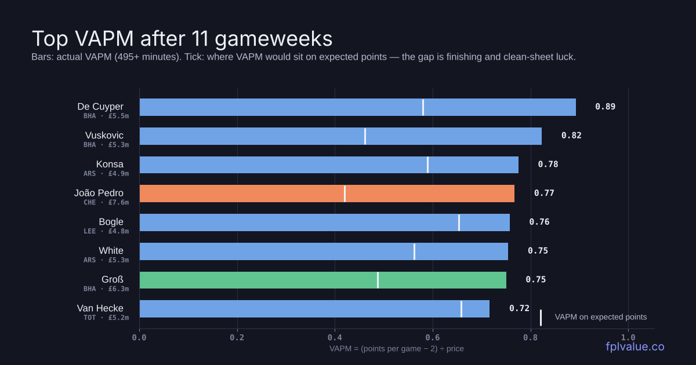

Value report: Brighton's defence leads, but the cheap value is elsewhere
GW11 was the lowest-scoring week of the season. The average manager scored 33, Haaland blanked at home to Fulham and Arsenal drew 2–2 at Newcastle. This report scores our break picks, ranks the best value in the game after eleven gameweeks and checks which points were real. The minimum is 495 minutes, which is half the available time. Definitions are on the metrics page.

Scorecard: the break picks
The break planner listed nineteen players to buy and seven to sell. Here's how they did in GW11.
| Call | Player | GW11 pts | GW11 xPts | Verdict |
|---|---|---|---|---|
| Captain | Haaland MCI | 2 | 6.3 | Wrong. 1–1 with Fulham. The chances were there (6.3 xPts), but the goals weren't. |
| Buy | Arsenal defence | 1 each | 1.9 | Wrong. A 2–2 at Newcastle cost Raya, Gabriel and Konsa the clean sheet. |
| Buy | Silva BOU | 8 | 4.6 | Right. A clean sheet against Forest plus DefCon points. Hill, the other Bournemouth full-back, got 14. |
| Buy | Calvert-Lewin LEE | 9 | 7.7 | Right. A goal and an assist in Leeds' 4–1 win at Chelsea. |
| Buy | Rudoni COV | 10 | 5.5 | Right. Two assists in Coventry's 3–2 win over Palace. |
| Buy | Barry EVE | 2 | 2.5 | Blank. Everton lost 4–0 at Brentford and had almost nothing to give him. |
| Differential | Le Fée SUN | 3 | 3.1 | Quiet. Sunderland drew 0–0 at Villa. |
| Sell | João Pedro, Thiago, Cherki, Gvardiol, Hall | 0–1 | — | Right. Five players and three points between them. |
| Sell | Tarkowski EVE | −4 | −2.4 | Right, for the wrong reason. He was sent off after 39 minutes and is suspended until 13 December. |
| Sell | Tzolakis HUL | 10 | 5.3 | Wrong. Hull beat Brighton 2–0 and he made seven saves. |
The nineteen buys averaged 3.9 points, ahead of a week when the average manager scored 33. The sells were the better calls, though: Tarkowski's red card cost nearly a fifth of the game's managers four points. The captaincy was the miss. Haaland had a better chance of a return than anyone, but he still hasn't been the week's top scorer once this season.
Top VAPM 495+ minutes
| Player | Pos | Price | PPG | VAPM | Pts | xPts | Δ | Own |
|---|---|---|---|---|---|---|---|---|
| De Cuyper BHA | DEF | £5.5m | 6.91 | 0.89 | 76 | 57.1 | +18.9 | 50.1% |
| Vuskovic BHA | DEF | £5.3m | 6.36 | 0.82 | 70 | 48.9 | +21.1 | 11.6% |
| Konsa ARS | DEF | £4.9m | 5.80 | 0.78 | 58 | 48.9 | +9.1 | 25.4% |
| João Pedro CHE | FWD | £7.6m | 7.83 | 0.77 | 47 | 31.1 | +15.9 | 27.8% |
| Bogle LEE | DEF | £4.8m | 5.64 | 0.76 | 62 | 56.5 | +5.5 | 11.8% |
| White ARS | DEF | £5.3m | 6.00 | 0.75 | 42 | 34.9 | +7.1 | 3.9% |
| Groß BHA | MID | £6.3m | 6.73 | 0.75 | 74 | 55.8 | +18.2 | 49.5% |
| Van Hecke TOT | DEF | £5.2m | 5.73 | 0.72 | 63 | 59.6 | +3.4 | 19.2% |
| Verbruggen BHA | GKP | £4.7m | 5.36 | 0.72 | 59 | 41.9 | +17.1 | 24.7% |
| Tzolakis HUL | GKP | £4.7m | 5.36 | 0.72 | 59 | 48.9 | +10.1 | 13.6% |
Four of the top ten are Brighton players, and all four are well ahead of their expected points. Brighton have conceded 9 goals from 15.7 xG against, which is the biggest gap in the league. De Cuyper, Vuskovic, Verbruggen and Groß are between 17 and 21 points ahead of their xPts. That's roughly a quarter of their points. They're still good players in a good side, but the 2–0 defeat at Hull is what a normal week looks like when the luck runs out.
Bogle and Van Hecke are the ones to look at. The tick in the chart shows where each player would be on expected points, and they're the two closest to their bars. Their VAPM on expected points (0.65 and 0.66) is the best in the game. They are scoring what they deserve. Bogle is £4.8m and owned by 12%, and Van Hecke was the second-most bought player before GW11.
Konsa is the cheapest way into the best defence in the league. He has 58 points at £4.9m, with less over-performance than any of the Brighton players.
Top points per million
| Player | Pos | Price | Pts | PPM | xPts | Own |
|---|---|---|---|---|---|---|
| De Cuyper BHA | DEF | £5.5m | 76 | 13.82 | 57.1 | 50.1% |
| Vuskovic BHA | DEF | £5.3m | 70 | 13.21 | 48.9 | 11.6% |
| Bogle LEE | DEF | £4.8m | 62 | 12.92 | 56.5 | 11.8% |
| Verbruggen BHA | GKP | £4.7m | 59 | 12.55 | 41.9 | 24.7% |
| Tzolakis HUL | GKP | £4.7m | 59 | 12.55 | 48.9 | 13.6% |
| Justin LEE | DEF | £4.5m | 55 | 12.22 | 51.4 | 2.6% |
| Van Hecke TOT | DEF | £5.2m | 63 | 12.12 | 59.6 | 19.2% |
| Konsa ARS | DEF | £4.9m | 58 | 11.84 | 48.9 | 25.4% |
| Groß BHA | MID | £6.3m | 74 | 11.75 | 55.8 | 49.5% |
The new name is Justin. He's £4.5m, owned by 2.6%, and his 55 points are almost all earned (51.4 xPts). He's the cheapest regular starter in a Leeds defence that has conceded nine, and Leeds play Coventry and Ipswich at home in the next three gameweeks. If you need a fifth defender, he's the one.
Under-performers: points lagging expected
| Player | Pos | Price | Pts | xPts | Δ | xGI | Own |
|---|---|---|---|---|---|---|---|
| Murillo NFO | DEF | £5.5m | 35 | 50.7 | −15.7 | 1.95 | 1.9% |
| Gonzalo FUL | FWD | £5.8m | 25 | 39.5 | −14.5 | 4.82 | 3.0% |
| McAtee NFO | MID | £5.5m | 31 | 44.9 | −13.9 | 3.05 | 0.1% |
| Rayan BOU | MID | £6.3m | 33 | 46.8 | −13.8 | 4.05 | 2.4% |
| Muñoz NFO | DEF | £5.2m | 17 | 29.3 | −12.3 | 1.83 | 4.0% |
| Gibbs-White NFO | MID | £7.8m | 41 | 51.4 | −10.4 | 5.38 | 8.8% |
| N.Williams NFO | DEF | £4.8m | 35 | 45.1 | −10.1 | 2.19 | 4.8% |
| Silva BOU | DEF | £5.1m | 48 | 56.5 | −8.5 | 1.92 | 4.1% |
Five of the eight are Forest players. The team has scored 9 goals from 17.8 xG, the worst finishing in the league, and they're 17th in the table while the numbers rate them sixth. Our team form post has them as the side most likely to turn it around. Gibbs-White is the one to buy. He has 5.38 xGI, the sixth-most of any midfielder, and only one goal. The model ranks him fourth among midfielders for GW12–16, and he's owned by 9%. McAtee is the budget version at £5.5m and 0.1%.
Gonzalo has one goal from 4.82 xGI, the biggest gap of any forward. Fulham's fixtures are poor, so he's one to watch rather than buy.
The template vs its expected points
Fifteen players are owned by a quarter of managers or more. Here's how their points compare with xPts, and where the model ranks them for GW12–16.
| Player | Own | Pts | xPts | Δ | GW12–16 | Read |
|---|---|---|---|---|---|---|
| Haaland MCI | 78% | 72 | 71.1 | +0.9 | 32.3 | Exactly what he deserves. The best projection in the game by nearly four points. |
| Rogers CHE | 55% | 57 | 47.7 | +9.3 | 21.6 | Five goals from 3.2 xG. 12th among midfielders. A hold, not a buy. |
| De Cuyper BHA | 50% | 76 | 57.1 | +18.9 | 22.9 | Lucky, but still the second-best defender for the next five. |
| Groß BHA | 50% | 74 | 55.8 | +18.2 | 26.2 | Lucky, and still the second-best midfielder. Keep. |
| Calafiori ARS | 48% | 58 | 50.5 | +7.5 | 20.0 | 11th among defenders. Konsa does the same job for £1m less. |
| Raya ARS | 46% | 61 | 52.1 | +8.9 | 15.0 | A 50% shoulder flag. Have a fit second keeper ready. |
| N.Jackson AVL | 36% | 56 | 46.6 | +9.4 | 22.1 | Bought by 812k for GW11 and scored 2. Fifth among forwards. |
| Tavernier BOU | 34% | 66 | 66.7 | −0.7 | 25.5 | Every point earned. Third among midfielders. |
| Cherki MCI | 32% | 55 | 39.2 | +15.8 | 14.3 | Five goals from 2.0 xG, and 20 minutes in GW11. 58th among midfielders. Sell. |
| João Pedro CHE | 28% | 47 | 31.1 | +15.9 | 1.3 | Still out with no return date. Sell. |
| Palmer CHE | 27% | 49 | 39.6 | +9.4 | 23.8 | Sixth among midfielders, with Palace and Villa at home in the next five. |
| Evanilson BOU | 27% | 67 | 56.5 | +10.5 | 21.3 | His xGI has jumped in the last four games. Sixth among forwards. |
| Isak LIV | 27% | 66 | 60.8 | +5.2 | 24.3 | Second among forwards, and Liverpool's run is all easy. |
| Gabriel ARS | 27% | 67 | 61.4 | +5.6 | 26.0 | The best defender in the game for the next five. |
| Konsa ARS | 25% | 58 | 48.9 | +9.1 | 20.3 | Eighth among defenders at £4.9m. Keep. |
GW11 in one table
| Player | Pos | Price | GW11 | GW11 xPts | Own | Read |
|---|---|---|---|---|---|---|
| Lewis-Potter BRE | MID | £5.5m | 16 | 10.0 | 1.8% | Two goals in the 4–0 against Everton. He has 3.28 xGI this season, so this one was earned. |
| Okafor LEE | MID | £5.7m | 15 | 7.3 | 1.2% | Two goals from 0.27 xG at Chelsea. He's started one of the last four. Not one to chase. |
| Wirtz LIV | MID | £7.4m | 14 | 10.6 | 9.6% | A goal and an assist against United. His xGI per 90 has more than doubled since GW7. |
| Hill BOU | DEF | £5.6m | 14 | 6.7 | 4.3% | Clean sheet, assist, DefCon and three bonus points. Bournemouth's best-projected defender. |
| Ngumoha LIV | MID | £5.7m | 13 | 11.5 | 0.6% | The best GW11 xPts of anyone, but only 279 minutes on the season. Watch his starts. |
| McBurnie HUL | FWD | £5.5m | 13 | 9.7 | 1.9% | Two goals against Brighton. His xGI per 90 has nearly tripled in the last four games, but Hull's fixtures are joint-worst in the league with Ipswich. |
Methodology: VAPM = (points per game − 2) ÷ price. PPM = points ÷ price. xPts swaps goals, assists, clean sheets and goals conceded for their expected equivalents. Appearance, bonus, saves, cards and DefCon are as scored. Δ = points − xPts. All figures are from the FPL API after GW11 (data refreshed 24 November), with a minimum of 495 minutes. GW12–16 projections are from the projection model. Full definitions.